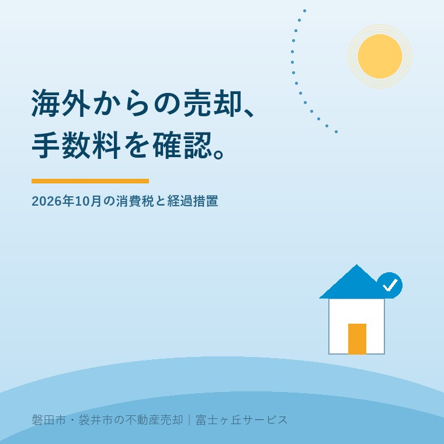
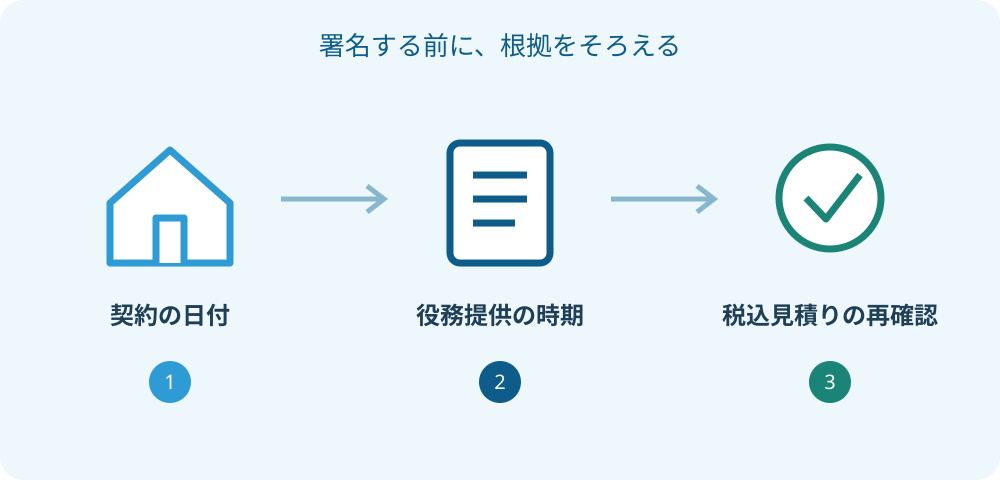

非居住者の仲介手数料、10月から消費税はどうなる
2026年9月26日｜カテゴリ：仲介手数料・税の確認

この記事の要点
Q. 海外に住んで日本の実家を売ると、仲介手数料の消費税は変わりますか？
国税庁は、非居住者への国内不動産の媒介等について、2026年10月1日以後は輸出免税の対象外になると案内しています。3月31日までの契約には経過措置があります。契約と役務提供の時期を税理士へ確認してください。富士ヶ丘サービスのような地域密着の会社へ、資料整理から相談する選択肢もあります。
大石浩之（磐田市／不動産業）です。海外から磐田市や袋井市の実家を売る相談では、売却価格だけでなく、日本側で支払う費用を同じ通貨で並べます。2026年9月26日時点で確認しておきたいのが、非居住者に対する不動産仲介サービスの消費税です。10月の取引を予定している人は、見積書の日付を確かめてください。
10月1日から変わるのは、国内不動産の媒介等の扱い
国税庁No.6567は、非居住者に提供するサービスでも、日本国内の不動産の売買・交換・貸借の代理や媒介は、輸出免税の対象外になると説明しています。注記の適用時期は2026年10月1日以後です。同ページは2026年4月1日現在の法令等に基づく案内です。
ここで見るのは、不動産会社に頼む仲介サービスへの課税です。日本の土地を売った代金すべてに、今回の改正で新たに消費税が掛かる、という説明ではありません。仲介の費用と、売却する資産そのものの税の扱いを分けるところから始めます。
海外の住所があるから、すべての日本のサービスが免税になるわけでもありません。国税庁は、国内にある資産の管理や修理など、従来から免税にならないサービスの例も示しています。見積書に管理費と仲介手数料が並ぶ場合は、項目ごとの扱いを聞きます。
非居住者に該当するかは、日本国籍か外国籍かという言葉だけで判断しないでください。本記事は非居住者への媒介に関する変更を整理していますが、ご自身の税務上の区分まで判定するものではありません。居住の状況などを税理士へ伝え、区分から確認します。
経過措置は、3月31日までの契約を確認する
国税庁No.6567の注記には、2026年3月31日までに締結された契約に基づく取引は、改正前の消費税法が適用されるという経過措置があります。10月以後という日付だけを見て一律の結論にせず、古い契約が関係する場合は書面を残して確認します。
ここで私は、売買契約書と媒介契約書を別々に出してもらう進め方を勧めます。家を買主へ売る約束と、不動産会社へ仲介を依頼する約束は同じ書面ではありません。「3月に契約した」という説明だけでは、何の契約かが伝わらないからです。
契約を更新した場合、業務範囲を変えた場合、依頼先を変更した場合は、その後の書類も一緒に見せます。古い日付の表紙だけを使って、自分に有利な扱いを選ぶことはできません。どの取引がどの契約に基づくかを、経過措置の条件に照らして確認する必要があります。
支払日を9月へ前倒しすれば免税になる、とも断定しません。請求書の発行日、契約日、仲介サービスを提供した時期には違いがあります。私は、担当者から「この日付で判定した理由」を書面でもらい、不明な点を税理士へつなぐ順番にします。

良い点は、費用を項目ごとに説明する機会になること
税の扱いを確認する時に、仲介の費用を税抜額・税額・税込額へ分けて説明できる点を、私は良い点と考えます。制度が変わること自体を所有者の利益とは言いません。ただ、総額だけだった見積書を読み直す機会にはできます。
国税庁No.6303は、標準税率が消費税と地方消費税を合わせて10％であると案内しています。課税される仲介手数料について、税抜報酬を仮に60万円とすると、10％相当は6万円、税込額は66万円です。これは計算説明用の仮例で、当社の料金や法定上限を示すものではありません。
| 説明用の仮例 | 金額 | 確認すること |
|---|---|---|
| 税抜報酬 | 600,000円 | 合意した仲介業務と報酬額 |
| 10％相当の税額 | 60,000円 | その取引の課税関係 |
| 税込支払額 | 660,000円 | 支払時期、立替え等との区別 |
この6万円を「小さな差」と片付けないのが、不動産業者としての私の考えです。海外送金や現地管理、片付けにも支出がある家族には、手取りを左右する額です。売却を手取りで考える方法の表へ、確定した費用を一つずつ移します。
税率の確認と報酬額の合意も分けます。税の扱いが変わったことを理由に、税抜報酬の増額まで当然に含まれていると受け取らないでください。仲介手数料の基本を読み、元の見積書と改定後の見積書を同じ項目で比べます。
注文したいのは、手取り表を契約前に更新すること
海外在住の所有者へ出す見積書には、作成日、前提とした居住区分、経過措置の確認状況を残してほしい、と私は考えます。見積りが古いまま、決済直前に総額だけ変わる説明では、家族が送金額や使えるお金を計画できません。
私は、未確認の税額を0円と置いた手取り表を完成版にしません。空欄には「税理士へ確認中」と書き、課税された場合の仮計算を別枠に置きます。確定していないことを見える形にすれば、早めの段階で資金の余裕を考えられます。
見積書では、仲介手数料、登記関連の支出、測量、残置物の片付け、管理費を別の行にします。金額が似ていても、課税の理由や支払先は同じとは限りません。「諸費用一式」のまま比較するより、どこが増えたかを確認できる形の方が話が早くなります。
インボイスの話が出た場合も、税を支払うかどうかと、事業者が仕入税額控除を受けられるかを混ぜません。個人の実家売却か事業用資産かでも確認事項が変わります。賃貸物件の売却とインボイスは関連する入口ですが、今回の非居住者への媒介の改正とは別に条件を確かめます。
売却代金の源泉徴収とは、計算の欄を分ける
国税庁No.2879は、非居住者等から日本国内の土地等を購入した際の源泉徴収を案内しています。買主が売却代金を支払う場面の扱いであり、仲介会社へ払う手数料の消費税とは別です。個別の取引に当てはまる条件や例外は、税理士に確認してください。
海外の口座へ入る金額を知りたい家族にとっては、両方とも手取りに関係します。それでも一つの「税金」の欄に合算すると、誰がどこへ支払うのか見えなくなります。売却代金、費用として払う税、代金から徴収される税、後の申告で確認する税を分けて整理します。
私は、買主、不動産会社、登記を担当する司法書士、税理士の説明が同じ資料に結びつくようにしたいと考えます。家族がそれぞれから聞いた数字を覚えて足し算する方式にはしません。見積書の版と更新日をそろえ、誰がどの欄を確認したかを記録します。
磐田・袋井の実家なら、日本側の資料窓口を一本にする
磐田市・袋井市の実家を海外から売るときは、現地調査を担う人と、税務判断を担う人を分けたうえで、書類の連絡窓口を決めると進めやすくなります。時差のため返事が遅れる場合も、契約書の版がそろっていれば確認の行き違いを減らせます。
最初に共有したいのは、媒介契約書、売買契約書の案、更新や変更の覚書、仲介手数料の見積書です。個人情報のある書類は、正式に依頼した相手が指定する安全な方法で渡します。家族全員に同じ添付ファイルを何度も転送するより、必要な担当者に絞ります。
介護施設への入居に伴う実家の処分では、入居費へ回せる額と時期も確認したいところです。富士ヶ丘サービスは介護と不動産を一体で相談する窓口を設けています。私は、不確かな手取りを先に約束せず、地元での査定と専門家の税務確認をつなぐ進め方を勧めます。
10月の変更があるからといって、9月中の売却を無理に勧めることはしません。私は、契約内容が分からない段階で、急いだ方が得だとは判断できません。売却時期には買主との調整や登記の準備も関わります。税だけを切り出して、家全体の条件を悪くする判断を避けたいのです。
仮に税抜報酬60万円のうち、契約時に30万円、決済時に30万円を支払う提案でも、二回の振込みだけを見て、それぞれ別の免税判定になると決めません。役務提供の実態と契約内容を確認します。支払回数は家計の予定に必要な情報ですが、税務の判定日そのものとは限らないからです。
為替で円換算した受取額も変わるため、税の見積りはまず円で確定する項目と未確定項目に分けます。そのうえで送金手数料や換算時点を別に確認します。円の費用が増えたのか、為替で見え方が変わったのかを、家族が区別できる資料にします。
今日確認するのは、古い契約と新しい見積りの組合せ
非居住者の仲介手数料を確認する今日の一歩は、契約書の日付と、見積書の税の欄を並べることです。「経過措置を検討したか」「どの日付を根拠にしたか」「税込額は確定か」の三点を仲介会社へ聞き、不明点を税理士へ渡します。
今日売ると決めなくても、契約の履歴と費用の根拠が揃えば前進です。私は、所有者が確認できる説明を残してから契約へ進みます。制度や税率は変わりうるため、本記事だけで個別の免税・課税を決定せず、非居住者の判定、経過措置、税務・登記の個別判断は専門家に確認を。
よくある質問
- 9月中に手数料を払えば、必ず免税になりますか？
- 支払日だけで免税と決めることはできません。国税庁の案内は、2026年10月1日以後に行われる取引と、3月31日までに締結された契約に関する経過措置を示しています。自分の契約で判定する日と取引内容を確認する必要があります。支払いを先に済ませる前に、仲介会社と税理士へ資料を提示してください。
- 3月31日までに売買契約があれば、経過措置を使えますか？
- 日付が古い書類を一つ持っているだけで、経過措置を使えるとは決められません。仲介サービスの契約と売買契約を区別し、どの契約に基づく取引かを確認します。更新や変更がある場合も、その内容を税理士へ提示してください。案内の「契約」が自分のどの書面に当たるかを確認するのが先です。
- 仲介手数料の消費税と、売却代金の源泉徴収は同じですか？
- 別の仕組みです。仲介手数料の消費税は、仲介サービスに支払う費用の話です。国税庁No.2879の源泉徴収は、非居住者等へ不動産の譲渡代金を支払う際の扱いを説明しています。対象条件や例外があるため混ぜて計算せず、売却代金、仲介費用、源泉徴収を別の欄にして税理士へ確認してください。

この記事を書いた人：大石浩之（磐田市／不動産業・宅地建物取引士）
富士ヶ丘サービス株式会社。介護施設の運営から不動産事業を始め、磐田市・袋井市・森町で、介護と相続、実家の売却を一体で相談できる窓口を設けています。家族が困らない売却のため、資料と現地の条件を一件ずつ整理します。著者プロフィール
参考にした公式情報
2026年9月26日確認。
本記事は2026年9月26日時点の公開情報と筆者の意見です。制度・数値・手続きは変更されることがあります。個別の契約・税務・登記・相続の判断は、弁護士・税理士・司法書士などの専門家に確認を。